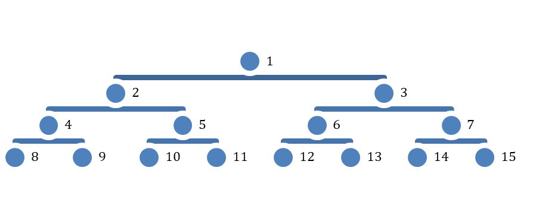

Pišek je zelo ponosen na svoje prednike. Zato si je izdelal rodbinsko drevo. Na vrhu je on, na naslednjem nivoju njegova starša (levo mama, desno oče), potem starši staršev (torej Piškovi dedki in babice), sledi nivo s starši Piškovih dedkov in babic, torej prababice in pradedki, potem pridejo praprababice in prapradedki …
Da se Pišek lažje pogovarja, je slike svojih prednikov oštevilčil, kot kaže slika. Tako namesto, da bi rekel »moj prapraprapradedek« rajši reče moj prednik številka »65«

A težave mu dela obratno poimenovanje. Zato mu pomagaj in napiši program, ki za prebrano številko prednika, napiše prapra…pradedek oziroma prapra…prababica (ali pa samo dedek, babica, oče ali mama). No, za številko 1 pa naj tvoj program napiše kar »To sem pa jaz«.